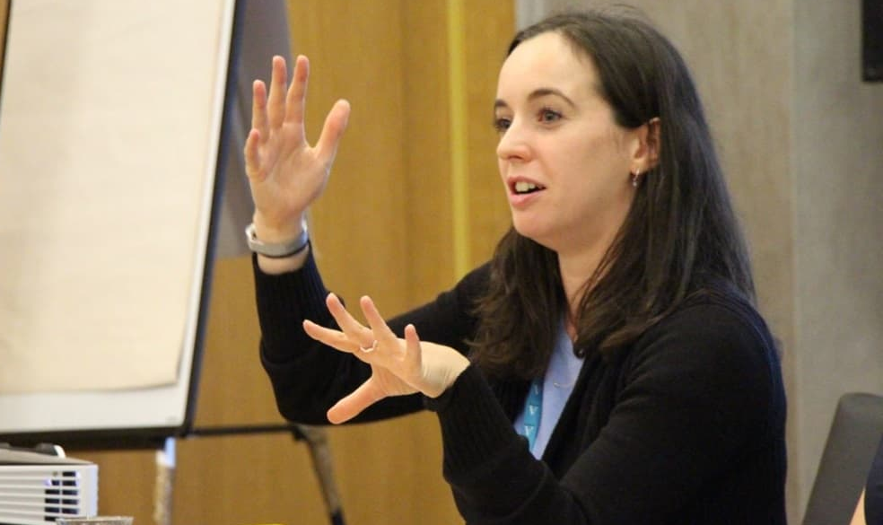

5
5
6+
30
2002
1
2
3
4
5
Brett Wigdortz OBE
Teach First
Teach For All
tiney
Steve Adcock
Daisy Christodoulou
Caroline Doherty

Isabel Instone
Michael Clarke
Diagram of the UK schools system on one page
OECD · 2025
What is Social Mobility?
Sutton Trust · 2025
English Curriculum Overview (3 pages)
CES · 2025
London has the best results for the poorest
Sutton Trust · 2025
About the London Challenge (2002 to 2011)
Institute for Government
The five missions of the current government
Labour
Teaching & Learning Toolkit
EEF
English school structures reforms 2010 to 2015
DfE
Ofsted Inspection Framework
The Key
The Engagement Gap
ImpactEd · UCL
Opinion: Traditionalists won, but what was lost?
Schools Week
A positive analysis of Multi-Academy Trusts
Grattan · 2024
Behaviour: is it the single biggest thing to get right?
The Sun
Research-based guide to pupil motivation
Ambition Institute
An introduction to Safeguarding
Supporting Education
What all teachers need to know
DfE · 2024
The evidence-based case for instructional coaching
Steplab · 2024
EL AL 311
EL AL 318